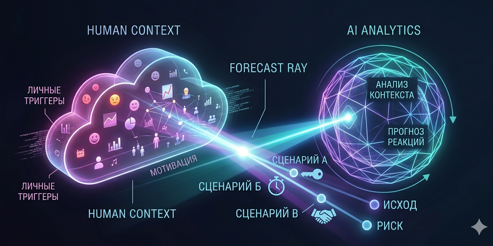

Системный фреймворк для инженеров, тимлидов и архитекторов.
Перестань реагировать на конфликты — начни управлять ими осознанно.

В крупных IT‑компаниях код редко ломается сам. Чаще всего проблема — в «сложности взаимодействий»: несовместимые OKR, невысказанные ожидания, эскалации и непредсказуемые реакции коллег.
Мы не даём «будьте добрее». Мы проектируем алгоритмы поведения на основе вашего реального опыта. Фреймворк построен как IDE для коммуникаций: профили, сценарии, отладка, логирование ситуаций.
Подходит для тех, кто мыслит системами, а не «на эмоциях».
Каждый шаг — отдельный чат с ИИ. На выходе — markdown‑файлы, которые можно переиспользовать и уточнять.
Триггеры, реакции, стиль в конфликте, «что меня бесит» и что помогает успокоиться. Честно, без психологии — только наблюдаемое поведение.
Что его бесит, какие обвинения предъявит, как с ним договариваться. Гипотеза о мотивах: «боится потерять статус», «хочет покоя», «болеет за продукт».
Кто реально принимает решения, где заложены системные конфликты (разработка vs безопасность, продукт vs архитектура), от кого зависит результат.
Загружаешь профили → ИИ задаёт вопросы по конкретной ситуации → получаешь 2–3 варианта действий с фразами, рисками и прогнозом реакции.
🔄 Ретроспектива → Обратная связь
После реального разговора ты возвращаешься в чат Шага 4, ИИ анализирует расхождения, корректирует профили и заполняет таблицу острых коммуникаций. Система становится умнее с каждым циклом.
Скопируй промты для шагов 1–4 из репозитория. Каждый промт — это диалоговый сценарий.
Новый чат → Шаг 1 → сохрани profile_me.md
Новый чат → Шаг 2 (на каждого значимого коллегу) → profile_name.md
Новый чат → Шаг 3 → company_map.md
В новый чат загрузи все три файла + инструкцию Шага 4. LLM начнёт задавать вопросы и спроектирует сценарий.
Без файлов 1–3 шаг 4 не работает. ИИ не узнает твои триггеры и мотивы коллег. Сначала создай базу — потом моделируй.
В репозитории есть папка /modules — готовые уроки, которые исправляют типовые ошибки ИИ. Например:
При загрузке в чат эти уроки меняют поведение ИИ, делая его более чутким к реальным ограничениям (цензура, статус, корпоративная иерархия).
ИИ может начать копать «детские травмы» и «тени». Для инженерной среды это шум. Добавь в чат модуль «Архитектор-Суверен vs Адаптивный» — фокус вернётся к алгоритмам и инструментам.
Если коллега сказал «может быть, но это сложно» — это часто вежливый отказ. Используй модуль «Приоритизация релевантного контекста».
Не придумывай мотивы коллег, если нет фактов. В шаблоне профиля есть строка: «если не знаешь — напиши "не знаю"». Это честнее и точнее.
Фреймворк работает в цикле: модель → ситуация → ретроспектива → обновление профиля. Возвращайся с обратной связью — через 3-4 раза точность прогнозов резко вырастает.
Чтобы превратить конфликты в рабочие переговоры, не нужно становиться другим человеком. Нужно добавить систему.
📘 Получить инструкции для чатовВсе файлы (промты, шаблоны, уроки) доступны в репозитории: dialectic-alignment-dataset